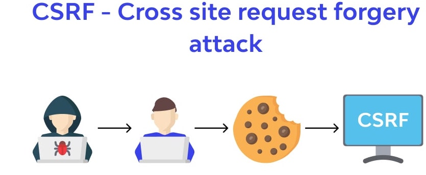
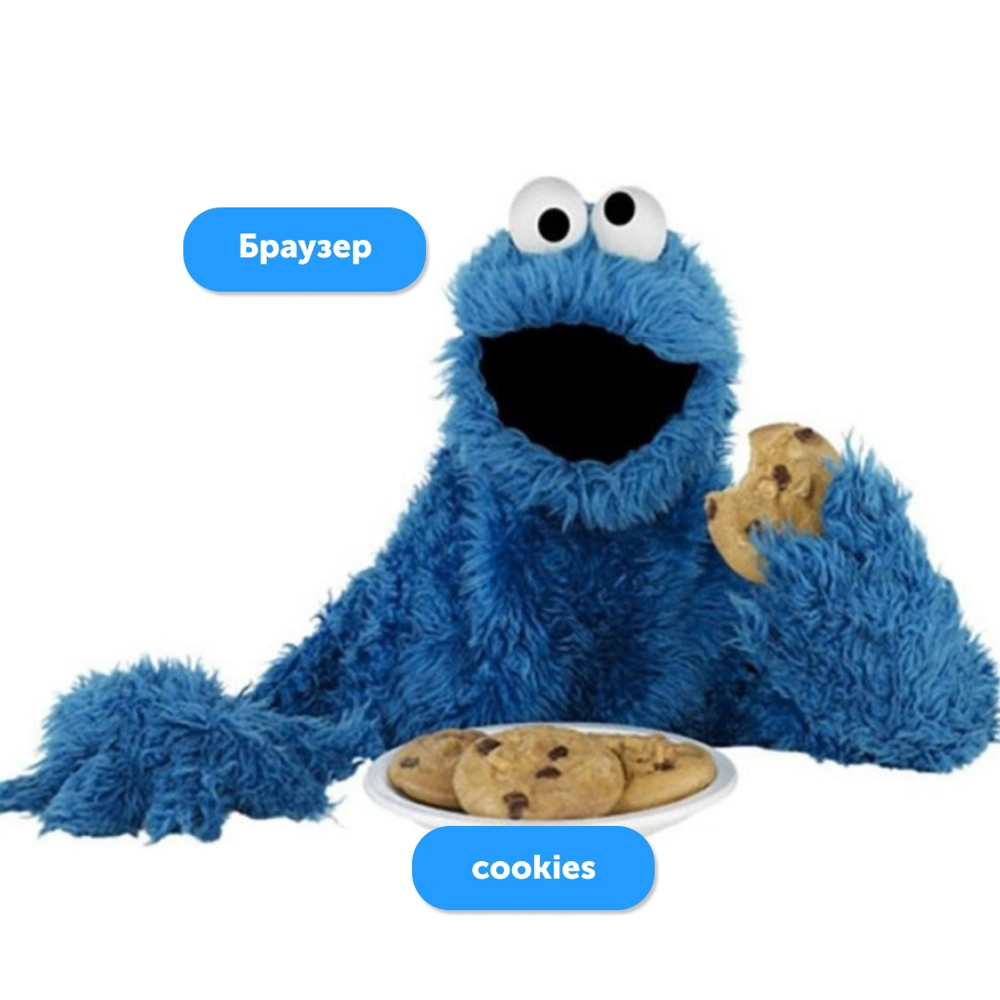
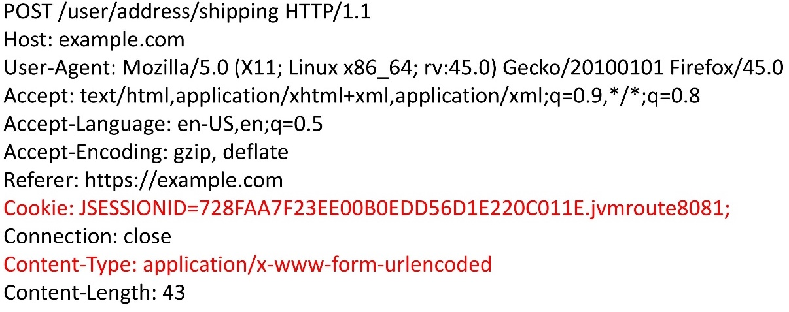
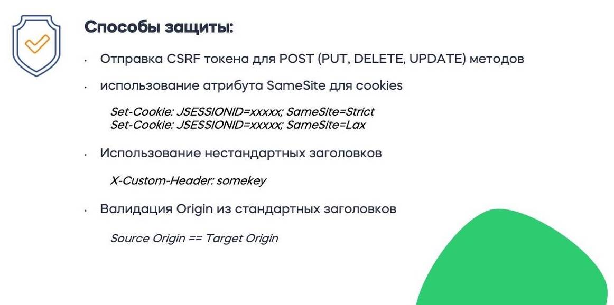
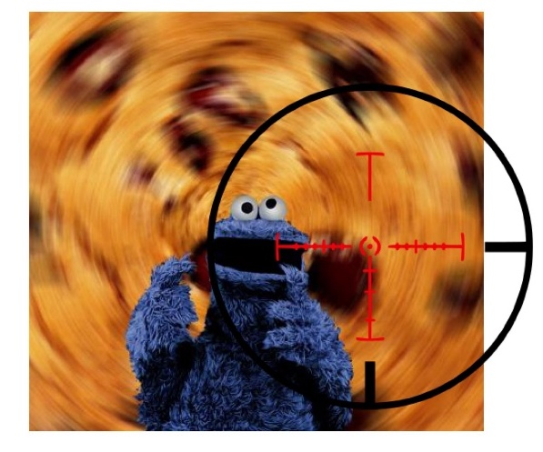
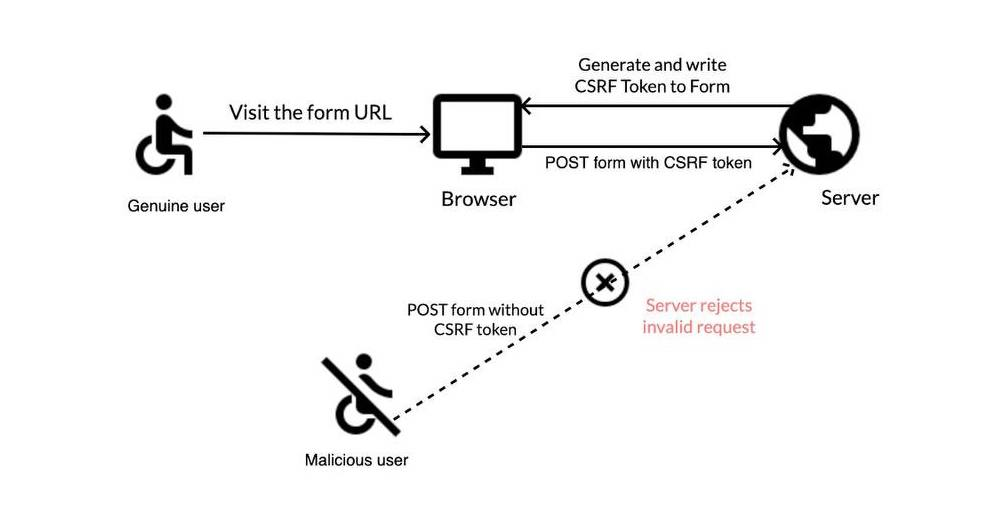

Подготовил студент группы ИУ3-32М:
Баева Анастасия
Информационная безопасность — это процесс обеспечения доступности, целостности и конфиденциальности информации.
Атаку, при которой хакер пытается выполнить авторизованный запрос на вашем сайте, используя доступ, предоставленный пользователем, называют CSRF-атакой (cross-site request forgery – межсетевая подделка запроса). Это огромная проблема для любой платформы (и особенно финтех) с многотысячной аудиторией.
В том, что CSRF-атаки работают виноват Cookie-монстр. Дело в том, что многие веб-приложения используют куки для управления сессией пользователя. Браузер устроен так, что, если у него есть куки пользователя для данного домена и пути, он их автоматически отправляет вместе с HTTP-запросом.
Куки — это небольшой фрагмент данных, который веб-сервер отправляет клиенту в виде name=value в HTTP-заголовке c названием «Set-Cookie». Браузер хранит эти данные на компьютере пользователя, и всякий раз при необходимости пересылает этот фрагмент данных веб-серверу в составе HTTP-запроса в HTTP-заголовке с названием «Cookie».
Куки могут иметь различные атрибуты, такие как: expires, domain, secure, httponly.
Все зависит от критичности уязвимого действия. Это может быть:
Есть несколько способов защиты от CSRF. Вот что рекомендует OWASP (The Open Web Application Security Project) – организация, специализирующаяся на исследованиях веб-безопасности:
Не пользоваться куки для управления пользовательской сессией
Выглядит это так: когда пользователь посещает сайт, мы создаем уникальный CSRF-токен, привязанный к этому пользователю. Токен можно получить через заголовок при входе на сайт или внутри HTML, если HTML генерируется на сервере. Этот токен верифицирует пользователя.
Мы подписываем этим токеном действия, которые могут изменить сервер (например, POST, PUT, DELETE), и рассматриваем их как доверенные.
Если злоумышленник попытается сделать запрос на сервер без этого токена, его действия будут заблокированы, и он не сможет выполнить нежелательные операции.
Стоит учитывать, что методы GET/HEAD/OPTIONS не должны изменять серверную часть. В противном случае мы сами закладываем уязвимости, от которых одним наличием CSRF-токена не защититься.
Организация OWASP разработала определенные рекомендации по защите от CSRF. Среди них есть требования, выписанные к токену.
Токен должен быть:
Это базовые принципы для CSRF-токена.
Наиболее кардинальный и работающий вариант защититься от CSRF-атак — это избавиться от куков и использовать header с токенами.
Но если вы все-таки не готовы отказаться от куков для управления пользовательской сессией: